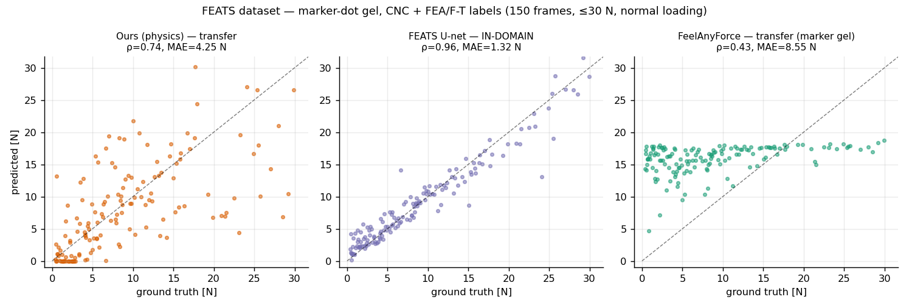
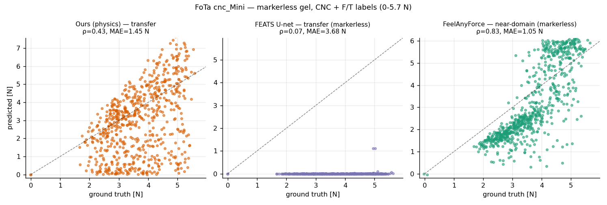
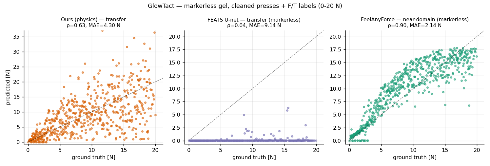
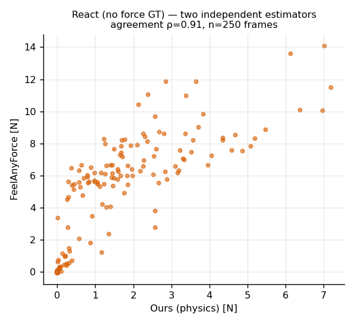

每个方法在每个有力传感器标注的数据集上评测,逐数据集画预测 vs 真值—— 数据集质量在行内被控制,面板之间的差异就是方法之间的差异。
↖ 方法设计 总览(英文) 图库 English| 数据集(gel 类型) | 我们——物理, 零训练帧 |
FEATS U-net (训练域:有点 gel) |
FeelAnyForce (训练域:无点) |
|---|---|---|---|
| FEATS val(有点) | 0.74 | 0.96 · 本域 | 0.43 |
| FoTa cnc_Mini(无点) | 0.43(非边缘 0.65) | 0.07 | 0.83 |
| GlowTact(无点) | 0.63 | 0.04 | 0.90 |
规律本身就是发现:每个网络只统治自己的 gel 域,出域即塌 (FEATS 0.96 → 0.04–0.07;FeelAnyForce 0.90 → 0.43); 而物理管线是唯一在所有域都工作的估计器(0.43–0.74)—— 它没见过训练数据,所以也没有可以离开的域。

本域内 FEATS U-net 非常出色(ρ=0.96)——它在别处的失败是域效应, 不是模型弱。FeelAnyForce(无点训练)在有点 gel 上退化到 0.43:这把刀两边都割。

条件苛刻:只有 4 帧无接触,62% 的按压贴边。我们边缘过滤后 ρ=0.65; FeelAnyForce 非边缘达 0.92。

最友好的真值(按压居中、10 帧自由参考、0–20 N)。我们家族内 ρ 达 0.93; 与 FeelAnyForce 的混合差距主要来自物体相关的体积→力增益——单一物理刻度学不到, 20 万帧监督学得到。

在我们真正关心的数据集上,两个幸存的估计器——物理(零训练)与 FeelAnyForce(20 万帧)——一致性 ρ=0.91,且物理管线判无接触的每一帧它都读 ≈0 N。 彼此无法抄袭对方的错误。
给 React 打标签(无点 Mini):FeelAnyForce 主标, 物理管线独立审计,分歧行打标。换任何新 gel 或新传感器、没有训练模型匹配该域时: 物理管线是唯一开箱即用的选项——它在 FEATS 数据集上的 0.74 就是"无人为它调过的域"上的表现。